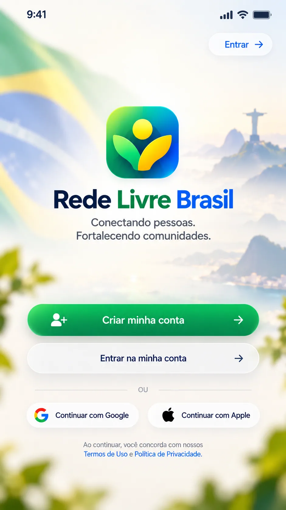
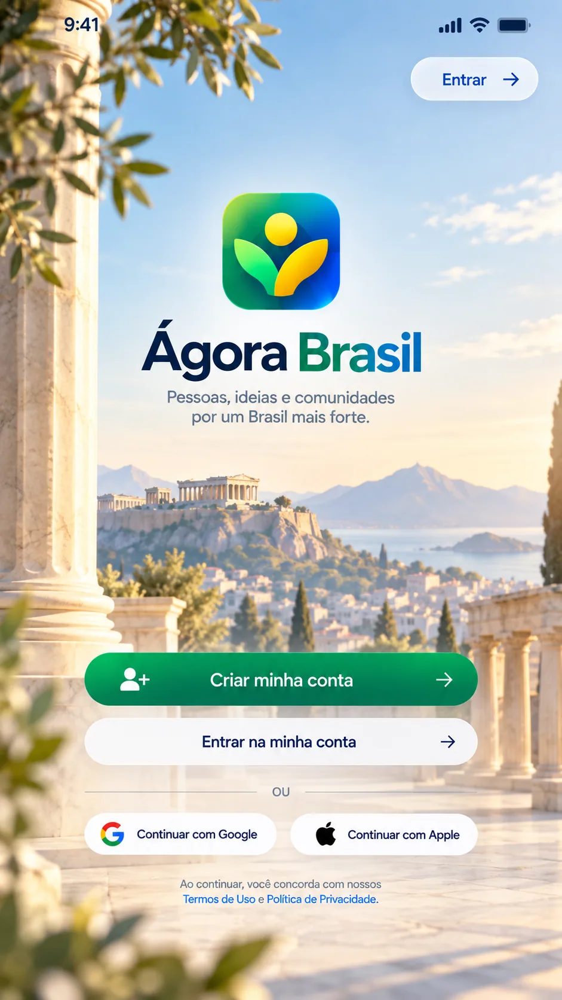
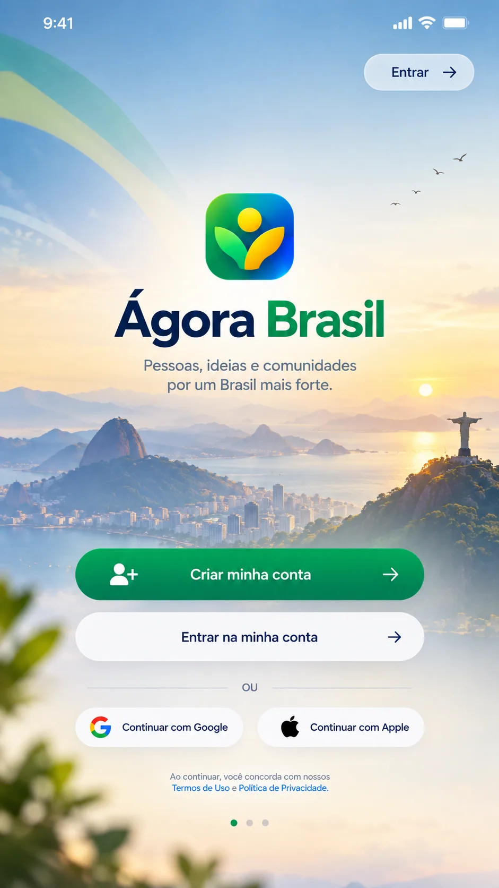

Uma rede nossa.
Construída juntos.
Imagina um espaço para conectar pessoas, compartilhar ideias e fortalecer comunidades? Essa ideia está começando, e a sua voz faz parte dela.
Escolher minha favorita →
Mais perto do que importa.
Uma proposta de rede social brasileira que nasce da escuta e da participação. O nome e a aparência ainda estão em aberto.
Uma rede para estar mais perto.
Queremos aproximar pessoas que vivem perto, compartilham interesses e podem se ajudar no dia a dia. Um lugar para pedir, oferecer e conversar com respeito.
Uma ideia para construir juntos.
Conheça os princípios, as primeiras ideias para a rede e os caminhos que queremos discutir com a comunidade.
Documento inicial para conversa · nome e decisões abertos à participação.
Qual visual combina
com a nossa rede?
Explore as ideias visuais e escolha sua favorita. No formulário, você também pode escolher ou sugerir o nome da rede.
Confira as três ideias antes de escolher no formulário.

02AtenasUm espaço de encontro e ideias
03UniãoBrasil e Ágora se encontramAs imagens são ilustrações de ideias. Botões e funções mostrados nelas não representam um aplicativo disponível.
Participe da escolha
Escolha seu visual favorito e, se quiser, escolha ou sugira um nome para a rede. E-mail e telefone são opcionais. As respostas são recebidas pelo projeto no Google Formulários.
Abrir votação e enviar minha escolha →O formulário abre no Google e não exige criar uma conta para votar.
O começo é nosso.
Uma boa ideia cresce quando mais gente ajuda a construir. Depois da consulta, a proposta é compartilhar o que aprendemos e os próximos passos.